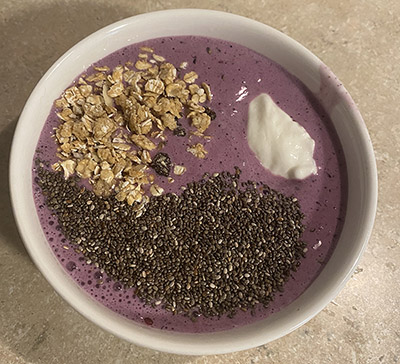
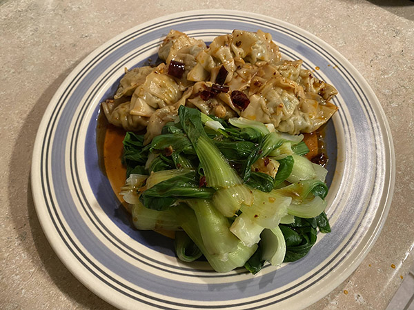
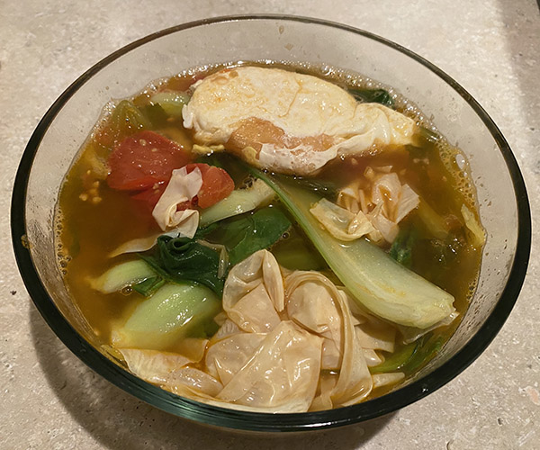

Healthy Cook Recipe
MENU
Healthy Breakfast Smoothies

Ingredients:
- Frozen berry
- Chia seed
- Milk
- Cereal
Instructions:
- 1. Fill blender or smoothie cup with frozen fruit.
- 2. Add milk.
- 3. Blend until desired thickness.
- 4. Add Chia seed and cereal
Mini Wontons with Vegetables

Ingredients:
- Baby pakchoi
- Frozen Mini Wontons
- Salt
- Soy sauce
- Vineger
- Chili oil
Instructions:
- 1. Boil some water.
- 2. Add frozen wontons and sliced baby bok choy.
- 3. Return to a boil and cook 3-5 minutes or until the wontons are done to your liking.
- 4. Add Salt, Soy sauce, Vineger, Chili oil

Ingredients:
- Egg
- Rice Noodle
- Baby pakchoi
- Tomato
- Salt
- Soy sauce
Instructions:
- 1. Combine the water, soup base, ginger, sesame oil and Sriracha in a large soup pot. Bring to a boil and stir until all ingredients are combined..
- 2. Add rice noodle. Return to a boil and cook 5 minutes or until the rice noodle are done to your liking.
- 3. Add tomato, sliced baby bok choy and other vegetable.
- 4. Add Salt, Soy sauce, Chili oil
- 5. Return to a boil and cook 2 minutes.